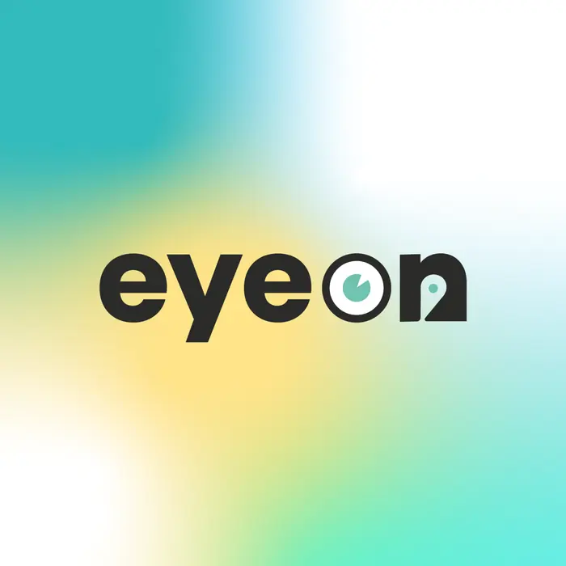
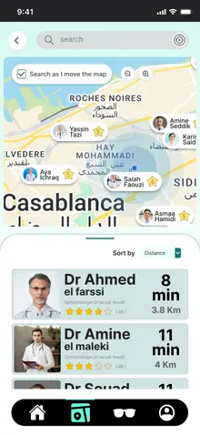
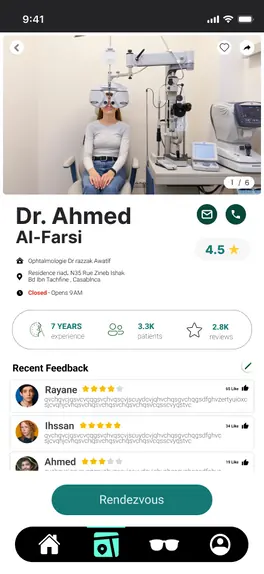

eyeon
voir clair, plus vite
Une application et un site qui réunissent l'achat de lunettes et la recherche d'un cabinet d'optique, pour des utilisateurs qui perdent aujourd'hui du temps entre les deux.

Visuel de couverturelogo, écran héros ou photo produit
1:1 ou 4:3
Le projet en quatre blocs
Le problème
Choisir une monture en ligne et trouver un opticien proche sont deux parcours séparés, longs et peu fiables.
La solution
Une plateforme unique : essai virtuel + recommandation selon la forme du visage, et une carte des cabinets avec avis et prise de rendez-vous.
Mon rôle
Entretiens utilisateurs, synthèse des irritants, arborescence, wireframes puis UI des écrans web et mobile.
Résultat visé
Réduire le nombre d'étapes entre « je cherche des lunettes » et « j'ai un rendez-vous » — mesuré par le taux de rendez-vous pris depuis la carte.
Pourquoi ce projet existe
L'achat de lunettes en ligne progresse, mais reste une décision qu'on n'aime pas prendre sans essayer. En parallèle, trouver un cabinet d'optique ouvert, proche et bien noté relève encore du bouche-à-oreille.
Nous partions d'un brief large — « une plateforme dédiée à l'ophtalmologie » — sans utilisateurs identifiés ni périmètre fixé. Le premier travail a donc été de réduire ce brief à deux parcours défendables.
Le défi
Comment rendre l'achat de lunettes et l'accès à un opticien assez simples pour qu'on ne renonce pas en route ?
Hors périmètre
Le paiement, la gestion de stock, l'espace professionnel des opticiens.
Ce que les utilisateurs nous ont dit
Question de recherche : quelles difficultés rencontrent les gens quand ils achètent des lunettes et cherchent un cabinet ?
Entretiens
Discussions avec des clients potentiels pour faire remonter les frustrations et les besoins réels.
Questionnaire
Collecte quantitative sur les préférences d'achat et les critères de choix d'une monture.
Observation
Analyse des parcours d'achat sur les sites d'optique concurrents.
Les quatre irritants qui reviennent
- 01La plupart des boutiques en ligne sont complexes et difficiles à utiliser.
- 02Choisir une monture adaptée à sa morphologie, et la bonne taille, reste un vrai blocage.
- 03Les utilisateurs ne savent pas où trouver les cabinets d'optique près de chez eux.
- 04Personne n'a envie d'attendre son tour sans savoir combien de temps.
« J'ai commandé deux fois, j'ai renvoyé deux fois. Maintenant je préfère perdre une matinée en magasin. »
Du constat à l'opportunité
Problème
Les utilisateurs ont du mal à choisir une monture adaptée et à trouver un opticien.
Besoins
Essai virtuel fidèle, personnalisation, conseil selon la forme du visage, et une carte pour localiser les cabinets.
Opportunité
Réunir essai virtuel, personnalisation et carte des cabinets — horaires, avis, prise de rendez-vous — dans un seul produit.
Persona
- Objectif
- Renouveler ses lunettes sans y passer un samedi entier.
- Freins
- Ne se fie pas aux photos produit ; ne sait pas quelle forme lui va ; ignore quels cabinets sont ouverts.
- Contexte
- Sur mobile, le soir, entre deux tâches.
- Critère de succès
- Une monture commandée et un rendez-vous posé dans la même session.
Point de vue & « Comment pourrions-nous… »
Salma a besoin d'être sûre du rendu d'une monture avant de commander, parce que le doute lui coûte plus cher qu'un déplacement.
Comment pourrions-nous rendre l'essai virtuel assez crédible pour décider ?
Comment pourrions-nous guider le choix sans imposer un questionnaire ?
Comment pourrions-nous rendre visible la disponibilité réelle d'un cabinet ?
Six pistes, gardées après tri impact / effort
Brainstorming, carte mentale puis matrice impact-effort : les six idées ci-dessous sont celles qui restaient une fois le tri fait.
Carte interactive des cabinets, avec avis, notes et photos, pour choisir puis réserver une consultation.
Impact fort · effort moyenPersonnalisation avancée de la monture : forme, couleur, taille.
Impact moyen · effort moyenApplication et site au design simple et direct pour l'achat et l'accès aux services optiques.
Impact fort · effort faibleRecommandation par analyse de la forme du visage.
Impact fort · effort élevéEssai virtuel en réalité augmentée avant l'achat.
Impact fort · effort élevéProgramme de fidélité et réductions pour les utilisateurs réguliers.
Impact faible · effort faibleLes écrans, et la décision derrière chacun
Le prototype devait répondre à une seule question : est-ce qu'on peut passer de la recherche d'une monture à un rendez-vous sans quitter le produit ?
 Écran 01
Écran 01accueil / point d'entrée
 Écran 02
Écran 02recherche / liste
 Écran 03
Écran 03détail / décision
 Écran 04
Écran 04moment clé du produit
 Écran 05
Écran 05catalogue
 Écran 06
Écran 06fiche produit

Écran 07mobile

Écran 08mobile
Couleurs, typographie, composants
 Planche d'identité
Planche d'identitéPalette
Échelle typographique
Comment on saura que ça marche
Lancement bêta
Déploiement auprès d'un groupe restreint avant la mise en ligne globale.
Suivi
Suivi des parcours et des abandons via les outils d'analyse d'usage.
Itération
Système de retour utilisateur intégré, pour corriger l'essai virtuel et les options de personnalisation en continu.
| Indicateur | Ce qu'il révèle | Base de départ | Cible |
|---|---|---|---|
| Rendez-vous pris depuis la carte | Si les deux parcours se rejoignent vraiment | à mesurer | à définir |
| Taux d'abandon sur la fiche produit | Si le doute sur la taille persiste | à mesurer | à définir |
| Essais virtuels par session | Si la fonction est trouvée, et pas seulement livrée | à mesurer | à définir |
| Retours produit après achat | Le coût réel d'un mauvais choix de monture | à mesurer | à définir |
Ce que je retiens
Ce qui a marché
Réduire un brief très large à deux parcours : tout le reste du projet est devenu décidable.
Ce que je referais autrement
Tester les wireframes avant de passer à l'UI : plusieurs écrans ont été finalisés avant d'être confrontés à un utilisateur.
La suite
Un test d'utilisabilité de l'essai virtuel sur 5 personnes, puis mesure de la première colonne du tableau.
Le projet montre surtout comment une méthode — comprendre, cadrer, produire, mesurer — transforme un sujet flou en un produit qu'on peut discuter écran par écran.
La même étude, en une page
À utiliser en PDF joint à une candidature, ou en support d'un entretien de 5 minutes. Bouton « Imprimer / PDF » en haut de page.
eyeon — voir clair, plus vite
Acheter ses lunettes et trouver son opticien au même endroit.
Problème
Deux parcours séparés, longs, et un doute permanent sur le rendu d'une monture.
Recherche
Entretiens, questionnaire, observation concurrentielle → 4 irritants récurrents.
Solution
Essai virtuel + recommandation par forme du visage + carte des cabinets avec réservation.
Mesure
Rendez-vous pris depuis la carte, abandons sur fiche produit.
Écrans clés
- Carte des cabinets — répond à « je ne sais pas où ils sont ».
- Essai virtuel — répond à « je ne sais pas ce que ça donne sur moi ».
- Fiche cabinet — répond à « je ne sais pas s'ils sont ouverts ».
Comment vous en servir
Trois façons de l'utiliser
- Modèle vierge. Le bouton en haut vide tous les textes et laisse les consignes : c'est votre point de départ pour un autre projet.
- Exemple rempli. État par défaut : le projet eyeon sert de référence de rédaction, section par section.
- Une page. Le modèle 11 s'imprime seul en PDF pour une candidature.
Avant de publier
- Chaque écran a une légende « job à faire » et une décision de design.
- Aucun chiffre non mesuré ne figure comme un résultat.
- Votre rôle personnel est distinct du travail de l'équipe.
- Une idée écartée est expliquée.
- Le texte se lit sans connaître le sujet.
Les 11 modèles
- Couverture
- Résumé en quatre blocs
- Cadrage & hors périmètre
- Recherche & irritants
- Problème → besoin → opportunité (+ persona, point de vue, CPN)
- Solutions retenues
- Galerie d'écrans
- Fondations UI
- Plan de mesure
- Apprentissages
- Une page